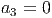
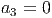

Teorema 6.1.1. Seja  um conjunto de
um conjunto de  pares ordenados de
números reais tais que
pares ordenados de
números reais tais que  se
se  . Existe um único polinômio
. Existe um único polinômio  de grau
de grau  ou inferior que passa por todos os pontos dados.
ou inferior que passa por todos os pontos dados.
Interpolação polinomial é o caso particular do problema geral de interpolação quando a família de funções é constituída de polinômios.
Teorema 6.1.1. Seja um conjunto de pares ordenados de
números reais tais que se . Existe um único polinômio
de grau ou inferior que passa por todos os pontos dados.
Demonstração. Observe que o problema de encontrar os coeficientes  ,
,
 ,…,
,…,  do polinômio
do polinômio

 é equivalente a resolver o sistema linear com  equações e
é equivalente a resolver o sistema linear com  equações e  incógnitas:
incógnitas: 

 cujo determinante é
dado por
cujo determinante é
dado por

Exemplo 6.1.1. Encontre o polinômio da forma
 que passa pelos pontos
que passa pelos pontos

Para encontrar os coeficientes devemos resolver o sistema linear

 ,
,  ,
,  e
e  . Portanto
. Portanto

Esta abordagem direta que fizemos ao calcular os coeficientes do polinômio na base canônica se mostra ineficiente quando o número de pontos é grande e quando existe grande discrepância nas abscissas. Neste caso a matriz de Vandermonde é mal-condicionada (ver [6]), acarretando um aumento dos erros de arredondamento na solução do sistema.
Uma maneira de resolver este problema é escrever o polinômio em uma base que produza um sistema bem-condicionado.